Opis każdego modułu strony: co robi, kto z niego korzysta, jak działa krok po kroku, jakie ma reguły i ograniczenia. Na końcu: AI, dane i prywatność, dostępność, API, konfiguracja i testy.
Prototyp hackathonowy dla Regionalnego Ośrodka Polityki Społecznej w Krakowie
Wyzwanie: Małopolski Hub Innowacji Społecznych (HUBMI). Wersja dokumentu: 1.0 · 3 października 2026. Dane w prototypie są przykładowe, z wyjątkiem innowacji pobranych z publicznej Biblioteki Innowacji Społecznych ROPS.
Mieszkańcy, organizacje i samorządy w Małopolsce widzą lokalne problemy – samotność seniorów, bariery w dostępie do usług, brak miejsc spotkań – ale nie wiedzą, że często ktoś już wymyślił i przetestował rozwiązanie. Wiedza o sprawdzonych innowacjach społecznych jest rozproszona, a droga od pomysłu do grantu jest trudna i sformalizowana.
Rozmach łączy zgłoszoną potrzebę z gotowymi innowacjami z Biblioteki Innowacji Społecznych ROPS i z ludźmi, którzy pomogą je wdrożyć, a nowy pomysł prowadzi od krótkiej fiszki aż do wniosku w naborze „Inkubator Włączenia Społecznego 2.0”.
| Grupa | Co robi na platformie |
|---|---|
| Mieszkańcy | Opisują problem własnymi słowami, przeglądają innowacje, zgłaszają pomysły, oceniają rozwiązania, zgłaszają się do testów, rozmawiają na forum. |
| Organizacje pozarządowe | Szukają partnerów i inspiracji, składają fiszki i wnioski grantowe, dzielą się doświadczeniem. |
| Samorządy, CUS, OPS, instytucje | Znajdują gotowe innowacje i dostają szkic ich wdrożenia jako usługi (Middleman), ogłaszają się w giełdzie partnerstw. |
| Zespół Hubu (ROPS) | Moderuje zgłoszenia, odpowiada autorom, prowadzi nabory, aktualizuje Bibliotekę i wskaźniki, obserwuje trendy potrzeb, dostaje powiadomienia na telefon. |
| Inne systemy | Pobierają innowacje, wyzwania i nabory przez publiczne API; odbierają zdarzenia przez webhook. |
HUB-KINO42) – nim sprawdza status i rozmawia z zespołem Hubu.Status: prototyp. Zgłoszenia, wnioski, wiadomości i wskaźniki są przykładowe. Innowacje pochodzą z publicznej Biblioteki ROPS (bez danych osobowych autorów). Nie należy wpisywać prawdziwych danych osobowych.
| Adres | Nazwa | Do czego służy |
|---|---|---|
/ | Strona główna | Wejście do platformy, zgłoszenie potrzeby (krok 1), opis działania, inspiracje, zasady AI, FAQ, trwające nabory. |
/dopasuj | Znajdź rozwiązanie | Matchmaking: opis problemu → dopasowane innowacje, podobne zgłoszenia, wyzwanie regionu. |
/zasobnik | Zasobnik wiedzy | Mapa Wyzwań Społecznych (wskaźniki), Biblioteka Innowacji ROPS z filtrem kategorii, materiały. |
/zasobnik/[id] | Karta innowacji | Opis innowacji wg 6 pytań ROPS, film, folder, materiały, licencja, przejście do wdrożenia. |
/kreator | Kreator pomysłów | Fiszka pomysłu z asystentem AI, asystent kreatora, lista naborów. |
/kreator/canva | Canva innowacji | Plansza do rozpisania pomysłu (9 pól), zapis w przeglądarce, druk/PDF. |
/kreator/wniosek | Generator wniosków | Wniosek w otwartym naborze; formularz ROPS IWS 2.0 w 4 krokach albo formularz pytań naboru. |
/status | Status zgłoszenia | Status fiszki/wniosku po kodzie, rozmowa z zespołem Hubu. |
/tester | Tester innowacji | Ocena innowacji (1–5), uwagi, zgłoszenie do testów. |
/komunikacja | Rozmowy | Forum Hubu i giełda partnerstw międzysektorowych. |
/middleman | Middleman Innowacji | Dla instytucji: szkic wdrożenia innowacji jako usługi (asystent AI). |
/o-projekcie | O projekcie | Opis rozwiązania, moduły, architektura, bezpieczeństwo, API, koszty utrzymania. |
/logowanie | Logowanie | Wejście do panelu administratora. |
/admin | Pulpit administratora | Statystyki, powiadomienia, trendy potrzeb, kolejka fiszek z rozmowami. |
/admin/pomysly | Pomysły | Dodawanie, edycja i usuwanie fiszek. |
/admin/wiedza | Zarządzanie wiedzą | Dodawanie innowacji do Biblioteki, publikacja/ukrywanie, wskaźniki wyzwań. |
/admin/nabory | Nabory i wnioski | Otwieranie/zamykanie naborów, dodawanie wniosków, ocena wniosków, rozmowa z wnioskodawcą. |
/admin/app | Aplikacja administratora | Instalowalna aplikacja (PWA) na telefon/komputer z listą nowych pomysłów i powiadomieniami push. |
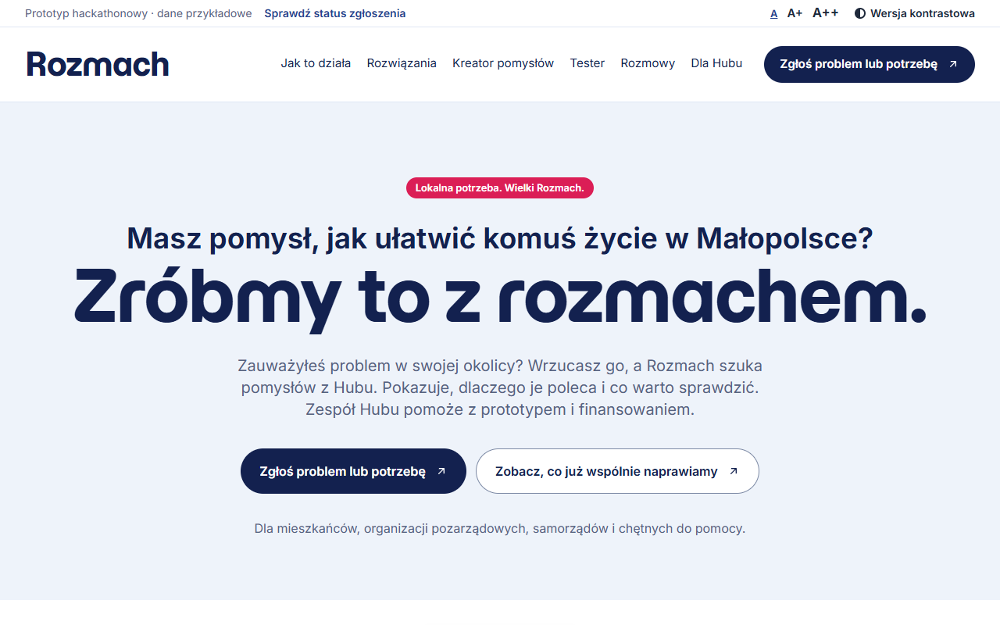
Strona główna odpowiada makiecie „ROZMACH – strona główna”. Sekcje od góry:
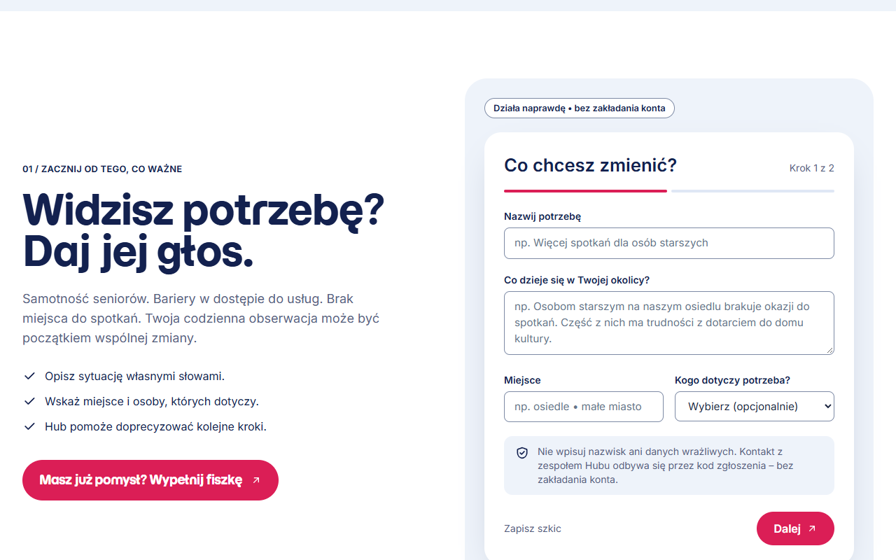
| Pole | Opis |
|---|---|
| Nazwij potrzebę * | Krótka nazwa, do 120 znaków (np. „Więcej spotkań dla osób starszych”). |
| Co dzieje się w Twojej okolicy? | Opis sytuacji, do 1500 znaków. |
| Miejsce | Np. „osiedle • małe miasto”, do 80 znaków. |
| Kogo dotyczy potrzeba? | Jedna z 9 kategorii Biblioteki ROPS (opcjonalnie). |
/dopasuj?q=…&area=…).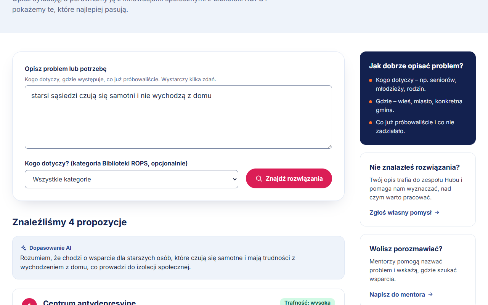
Cel: na podstawie opisu problemu pokazać innowacje, które mogą go rozwiązać, podobne sytuacje zgłoszone przez innych i wyzwanie regionu, którego dotyczy problem.
?q= i &area= – wtedy wyszukiwanie startuje od razu.Panel boczny: „Jak dobrze opisać problem?”, „Nie znalazłeś rozwiązania? Zgłoś własny pomysł”, „Wolisz porozmawiać? Napisz do mentora”.
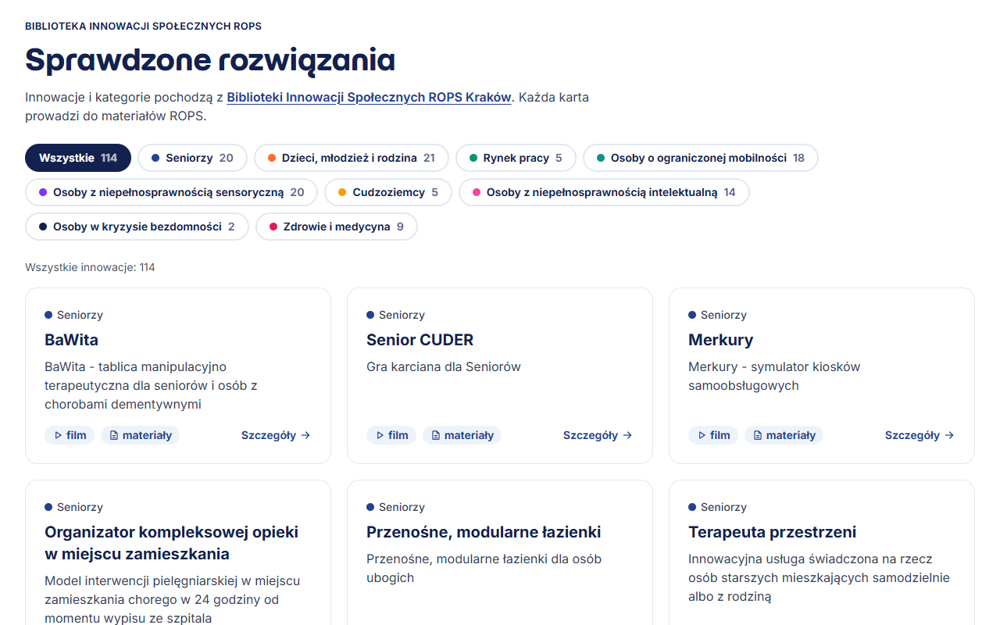
/zasobnik)/zasobnik?kategoria=dla-seniorow otwiera bibliotekę z gotowym filtrem – tak jak adresy kategorii na stronie ROPS./zasobnik/[id])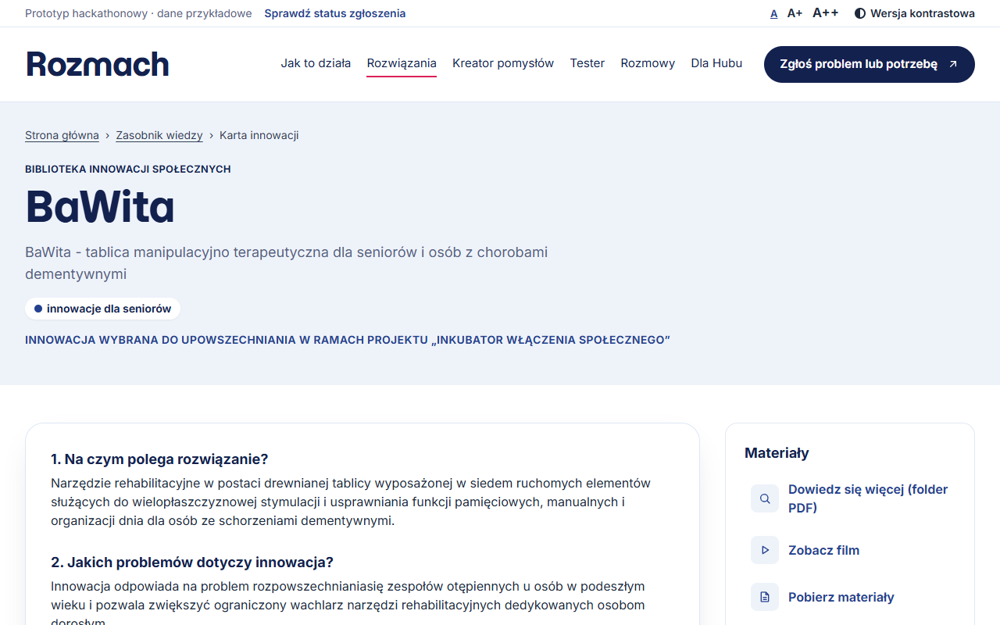
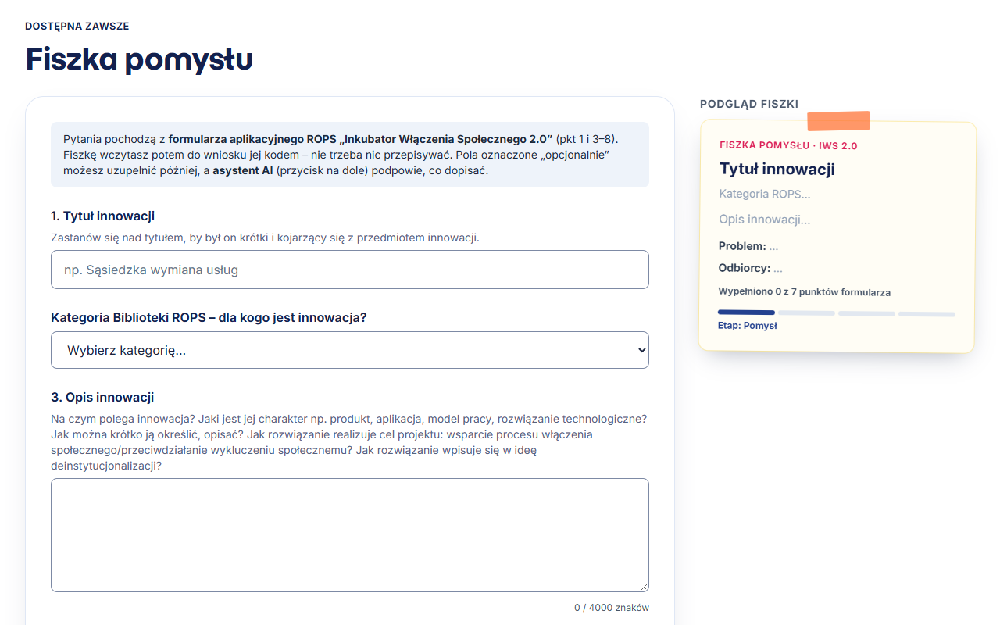
Cel: szybkie, zawsze dostępne zgłoszenie pomysłu bez zakładania konta. Pytania pochodzą z części merytorycznej formularza aplikacyjnego ROPS „Inkubator Włączenia Społecznego 2.0”, dzięki czemu fiszkę można później jednym kodem przenieść do wniosku.
| Pole (punkt formularza IWS) | Wymagane | Limit i podpowiedź |
|---|---|---|
| 1. Tytuł innowacji | tak | do 150 znaków; krótki, kojarzący się z przedmiotem innowacji |
| Kategoria Biblioteki ROPS | tak | jedna z 9 kategorii |
| 3. Opis innowacji | tak | do 4000 znaków; charakter, cel włączenia społecznego, deinstytucjonalizacja |
| 4. Innowacyjność rozwiązania | nie | do 4000 znaków; czym różni się od istniejących rozwiązań |
| 5. Diagnoza problemu | tak | do 4000 znaków; skala problemu, źródła danych, Mapa Wyzwań |
| 6. Opis odbiorców | tak | do 3000 znaków; kim są, jakie mają potrzeby, dlaczego grozi im wykluczenie |
| 7. Zmiana, jaką wprowadza | nie | do 3000 znaków; wpływ na problem i życie odbiorców |
| 8. Wizja przyszłości | nie | do 3000 znaków; skalowanie, inne grupy i miejsca |
| Autorzy | nie | do 200 znaków; nazwa organizacji lub podpis, bez adresu i telefonu |
| Etap | tak | Pomysł / Prototyp / W testach / Wdrożone |
HUB-XXXXXX) z przyciskiem kopiowania i linkiem do strony statusu. Fiszka trafia do panelu jako „Nowa”, administrator dostaje powiadomienie (panel, push, webhook).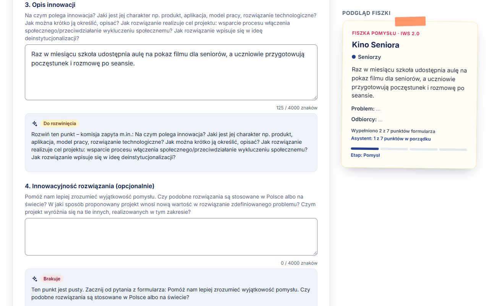
Przycisk „Sprawdź fiszkę z AI” pod formularzem. Asystent:
Do AI trafia tylko treść merytoryczna – bez pola „Autorzy”. Model ma zakaz wymyślania statystyk, nazw raportów i instytucji: w diagnozie wskazuje, gdzie szukać danych (np. GUS, raporty ośrodków pomocy). Bez AI asystent działa w trybie podstawowym: sprawdza kompletność punktów, cytuje pytania z formularza i szuka podobnych innowacji wyszukiwarką lokalną (bez propozycji treści).
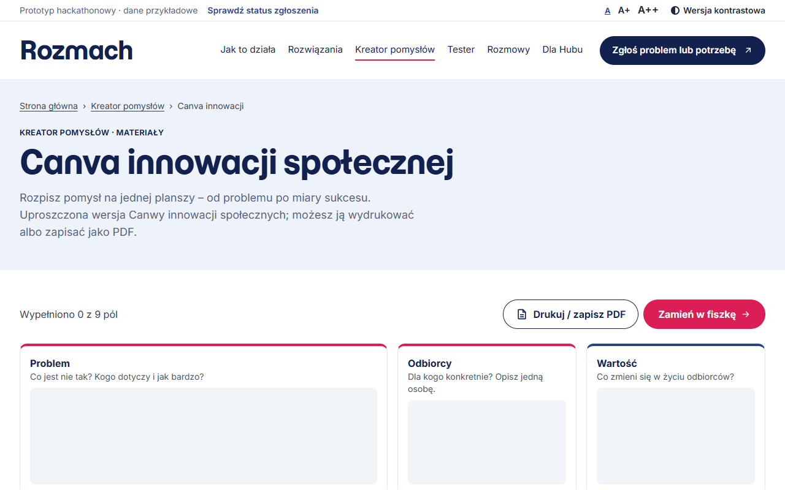
Uproszczona Canwa innowacji społecznych: Problem, Odbiorcy, Wartość, Rozwiązanie, Kluczowe działania, Zasoby, Partnerzy, Koszty i finansowanie, Miary sukcesu. Każde pole ma podpowiedź. Szkic zapisuje się automatycznie w przeglądarce (zostaje po odświeżeniu), przycisk „Drukuj / zapisz PDF” drukuje samą planszę (bez menu i stopki).
/kreator#asystent)Użytkownik opisuje pomysł – nawet w jednym zdaniu – i klika „Podpowiedz mi”. Asystent AI zwraca 3–4 sekcje podpowiedzi (np. Doprecyzuj problem, Co jest nowego, Zaplanuj mały test, Kto może pomóc) oraz „Zainspiruj się (Biblioteka ROPS)” – tylko innowacje istniejące w katalogu. Odpowiedź jest oznaczona „AI • wersja robocza – sprawdź przed użyciem”. Bez AI: stałe podpowiedzi oparte na Canwie i podobne innowacje z wyszukiwarki lokalnej („tryb podstawowy, bez AI”).
Generator działa tylko dla otwartych naborów. Strona /kreator/wniosek wybiera pierwszy otwarty nabór albo wskazany w adresie (?nabor=); gdy otwartych jest kilka, nad formularzem pojawia się przełącznik naborów. Gdy żaden nabór nie trwa, strona pokazuje listę zamkniętych naborów z terminami. Każdy wniosek dostaje kod WN-XXXXXX.
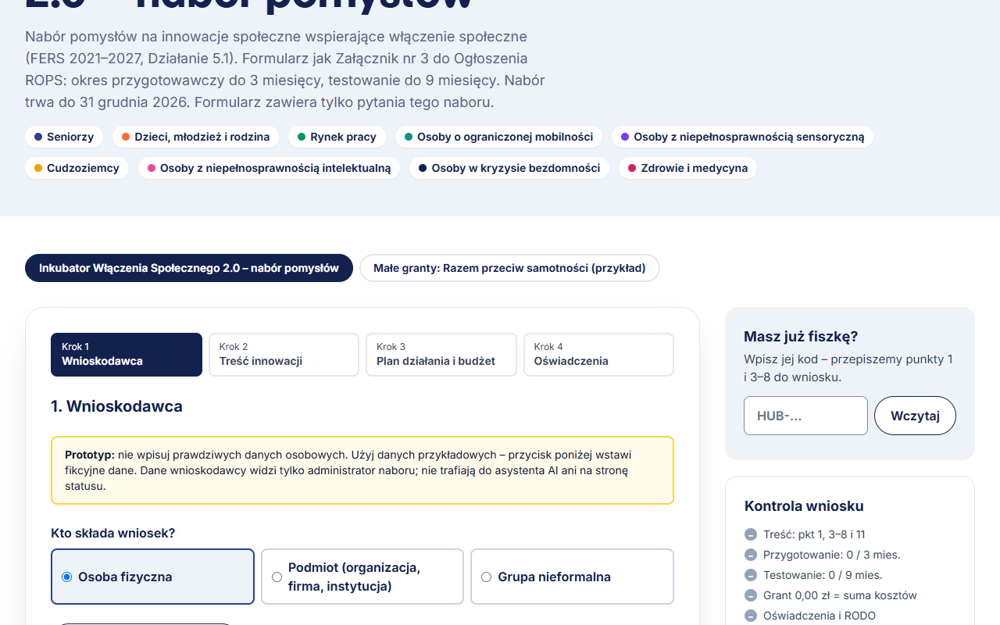
| Krok | Zawartość i reguły |
|---|---|
| 1. Wnioskodawca |
Osoba fizyczna: imię, nazwisko, adres, kod pocztowy (00-000), miejscowość, telefon, e-mail. Podmiot: nazwa, KRS (opcjonalnie, 10 cyfr), REGON (9 lub 14 cyfr, suma kontrolna), NIP (suma kontrolna), adres siedziby, kontakt, osoba upoważniona do reprezentacji i osoba do kontaktów roboczych. Grupa nieformalna: 2–5 partnerów (osoba lub podmiot, dane) i reprezentant grupy. Przycisk „Wstaw dane przykładowe” wpisuje dane fikcyjne; ostrzeżenie, by w prototypie nie podawać prawdziwych danych. |
| 2. Treść innowacji | Punkty 1, 3–8 i 11 (Zespół projektowy) z oryginalnymi podpowiedziami i limitami. Kod fiszki wczytuje punkty 1 i 3–8 automatycznie. |
| 3. Plan działania i budżet | Okres przygotowawczy, faza I testu, faza II testu (opcjonalna): działania z terminem od–do (miesiąc i rok) i kosztem. Reguły: przygotowanie ≤ 3 miesiące, testowanie (faza I + II) ≤ 9 miesięcy, żadne działanie nie kończy się przed rozpoczęciem, wnioskowana kwota grantu = suma kosztów (domyślnie wpisuje się sama). |
| 4. Oświadczenia | Lista 12 A (19 oświadczeń osoby fizycznej; także partnerzy grupy) albo 12 B (21 oświadczeń reprezentanta podmiotu), przycisk „Zaznacz wszystkie oświadczenia”, klauzule informacyjne RODO (ROPS i Instytucja Zarządzająca) i wymagane potwierdzenie ich przeczytania. |
Formularz budowany z pytań danego naboru (każde wymagane, z limitem znaków i licznikiem). „Masz już fiszkę?” – wpisanie kodu fiszki uzupełnia pytania powiązane z polami fiszki. Pasek postępu pokazuje liczbę uzupełnionych pól. Do zamkniętego naboru nie da się złożyć wniosku (komunikat „Ten nabór jest zamknięty”).
/status)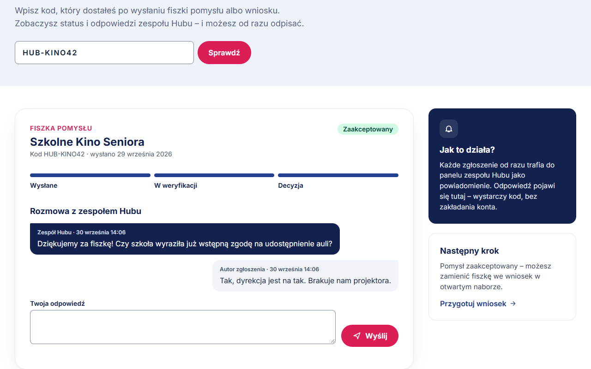
/status?kod=HUB-…./tester)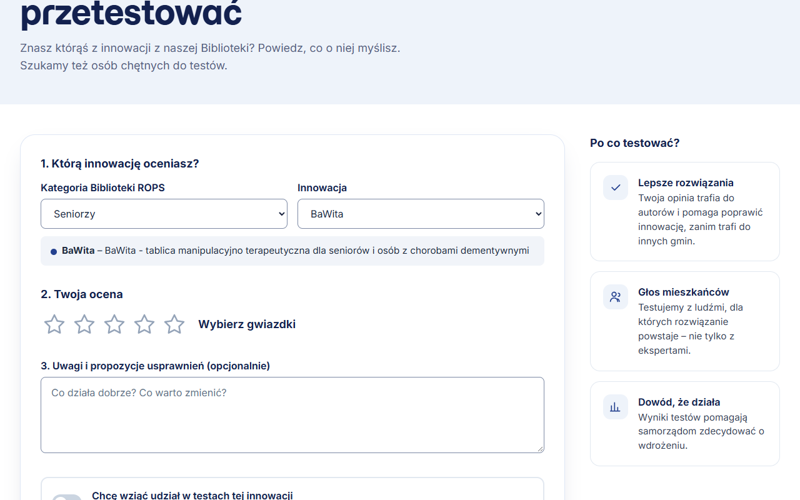
/komunikacja)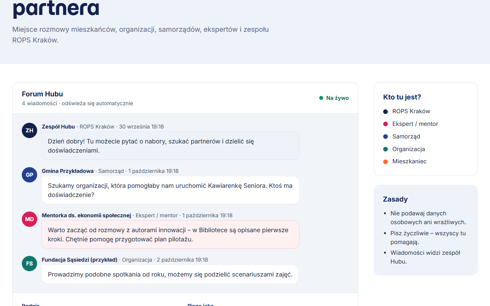
/middleman)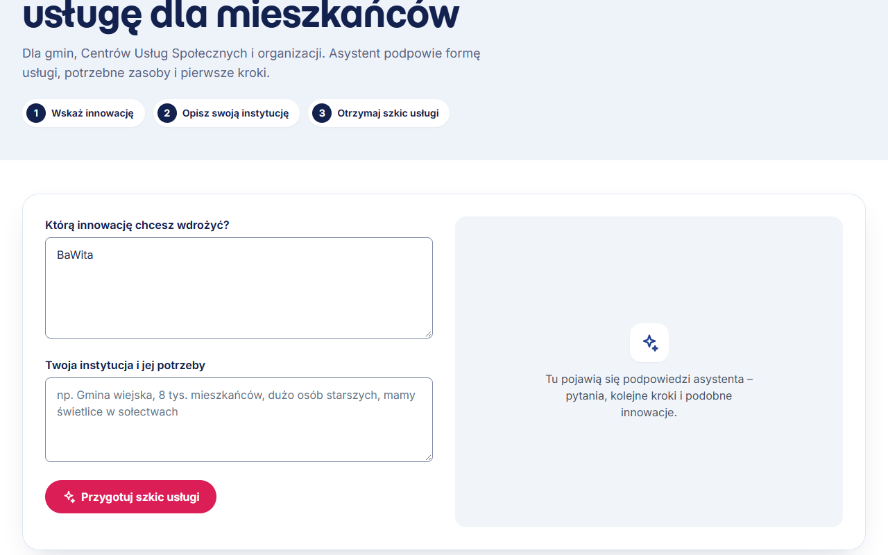
Dla gmin, CUS, OPS i organizacji. Trzy kroki: wskaż innowację (pole uzupełnia się samo po przejściu z karty innowacji), opisz swoją instytucję i jej potrzeby, otrzymaj szkic usługi. Asystent AI dopasowuje szkic do instytucji: forma usługi, zasoby, finansowanie (bez obiecywania środków), pierwsze kroki, oraz „Podobne wdrożenia (Biblioteka ROPS)”. Bez AI – szablon wdrożeniowy i podobne innowacje z wyszukiwarki lokalnej.
/o-projekcie)Nazwa i opis rozwiązania, zakres prototypu (moduły I–VII z briefu), schemat przepływu (zgłoszenie → matchmaking i zapis → powiadomienie → odpowiedź), architektura, bezpieczeństwo i dostępność, opis publicznego API, przewidywany koszt utrzymania i niezbędne zasoby.
/admin/… i /api/admin/… wymagają zalogowania. Niezalogowany użytkownik jest przekierowywany na /logowanie (a po zalogowaniu wraca na stronę, którą chciał otworzyć); API zwraca 401.demo (zmiana zmienną ADMIN_DEMO_PASSWORD). Sesja: ciasteczko httpOnly z tokenem SHA-256. Limit prób logowania: 20 na minutę z jednego adresu./admin)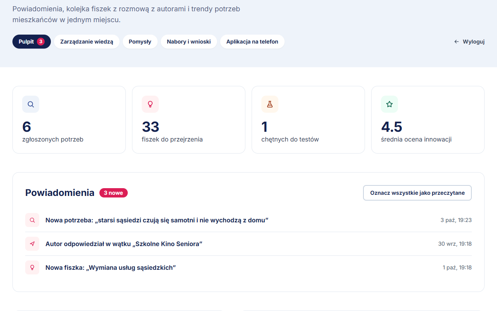
/admin/pomysly)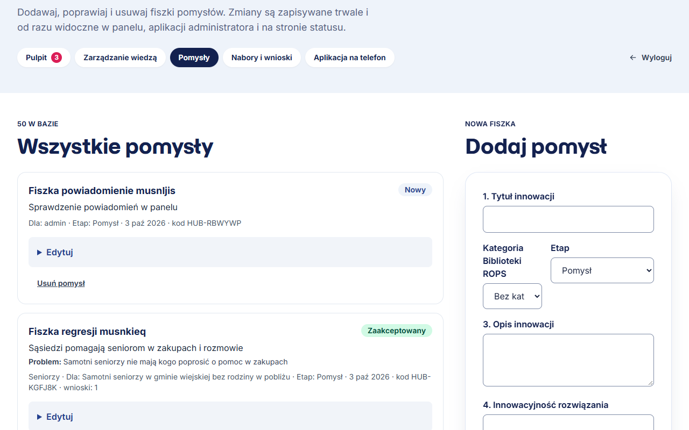
/admin/wiedza)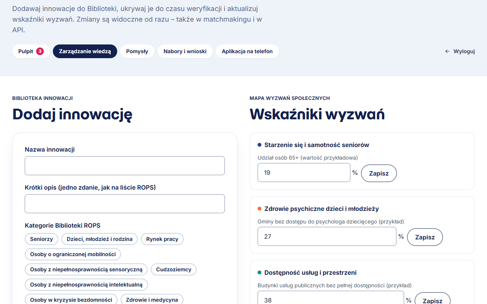
npm run import:rops (rozdział 6)./admin/nabory)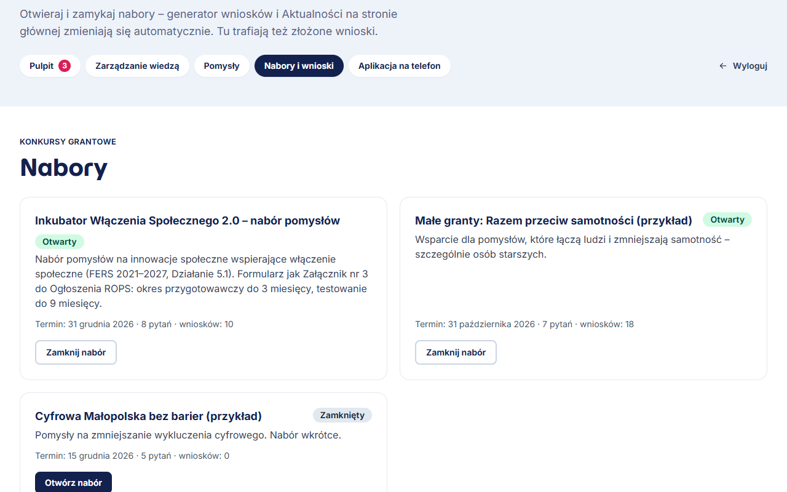
/admin/app)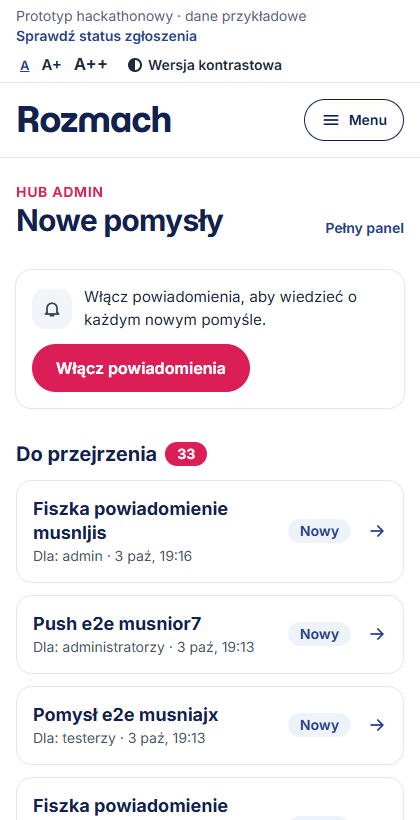
| Funkcja | Co dostaje model | Co zwraca |
|---|---|---|
| Matchmaking | Opis problemu, wybrana kategoria, katalog Biblioteki (do 150 pozycji), aktualne pomysły bez odrzuconych i bez kodów zgłoszeń | Do 5 innowacji z trafnością i uzasadnieniem, do 3 podobnych pomysłów, podsumowanie, następny krok |
| Asystent fiszki | Treść 7 punktów fiszki, kategoria, etap (bez autorów), katalog Biblioteki | Ocena każdego punktu, propozycje treści, do 3 podobnych innowacji, podsumowanie, następny krok |
| Asystent kreatora | Opis pomysłu, katalog Biblioteki | 3–4 sekcje podpowiedzi + do 3 inspiracji z Biblioteki |
| Middleman | Nazwa innowacji, opis instytucji, katalog Biblioteki | Szkic wdrożenia w 3–4 sekcjach + podobne wdrożenia |
gemini-3.5-flash, model zapasowy gemini-2.5-flash przy przeciążeniu lub limicie (429/500/503). Po wyczerpaniu limitu (429) model główny jest pomijany przez 10 minut.claude-opus-5-5, odpowiedzi w ustrukturyzowanym formacie, automatyczny model zapasowy przy odmowie, cache katalogu.AI_PROVIDER=gemini|claude, a bez niego – według dostępnego klucza (najpierw Gemini). HUB_AI=off wyłącza AI.Brak klucza, błąd sieci, przekroczony czas (15–25 s), odmowa modelu albo odpowiedź niezgodna ze schematem nie przerywają pracy: matchmaking używa wyszukiwarki TF-IDF (polskie rdzenie słów, uwzględnienie podtytułu, problemu, grupy docelowej i beneficjentów), asystent fiszki – reguł kompletności i wyszukiwarki lokalnej, asystent kreatora i Middleman – szablonów. Interfejs informuje, z jakiego trybu pochodzą wyniki.
| Dane | Gdzie | Uwagi |
|---|---|---|
| Fiszki pomysłów i wnioski | Plik data/hub-data.json (trwale) | Zapis atomowy; uszkodzony plik jest archiwizowany i zastępowany danymi startowymi; ścieżka: HUB_DATA_FILE. Usunięcie pliku = reset danych. |
| Innowacje | src/lib/data/rops-biblioteka.ts + dodane w panelu | 114 innowacji z publicznej Biblioteki ROPS, bez danych osobowych autorów. |
| Potrzeby, opinie, forum, giełda, powiadomienia | Pamięć serwera | Dane przykładowe – wracają do stanu startowego po restarcie (w produkcji: baza danych). |
| Szkice (potrzeba, Canva), ustawienia dostępności | Przeglądarka użytkownika | Nie trafiają na serwer. |
| Subskrypcje push | Pamięć serwera | Tylko adres i klucze przeglądarki administratora. |
.env.local, poza repozytorium); klucz Gemini przesyłany w nagłówku, nie w adresie.rel="noopener noreferrer".npm run import:rops pobiera 9 kategorii Biblioteki ROPS i karty szczegółów (pytania 1–5, bez autorów), scala duplikaty, zachowuje linki do filmów, folderów i materiałów oraz licencje. Zapytania idą kolejno, z odstępami, by nie obciążać serwera ROPS.
Wszystkie odpowiedzi w formacie JSON. Błędy: {"error": "komunikat po polsku"} z kodem 400 (dane), 401 (brak logowania), 404 (nie znaleziono), 409 (nabór zamknięty), 429 (limit zapytań).
| Endpoint | Opis |
|---|---|
GET /api/innovations | Opublikowane innowacje (np. dla portali gmin, systemu grantowego). |
GET /api/challenges | Wyzwania regionu ze wskaźnikami. |
GET /api/nabory | Nabory i ich status (otwarty/zamknięty). |
| Endpoint | Dane wejściowe → odpowiedź |
|---|---|
POST /api/match | text (3–2000), area? → results, similar, challenge, area, source (ai/lokalne), ai |
POST /api/ideas | Pola fiszki (tytuł, opis, odbiorcy, etap; opcjonalnie kategoria, diagnoza, innowacyjność, zmiana, wizja, autorzy) → {code}, 201 |
POST /api/ideas/coach | sections (7 punktów), category?, stage? → source, summary, points, similar, nextStep |
POST /api/applications | naborId, ideaCode?, answers albo form (IWS 2.0) → {code}, 201 |
GET /api/status?code= | Status, tytuł, data, rozmowa; dla fiszki także treść (do wczytania we wniosku) |
POST /api/status | code, text – odpowiedź autora w rozmowie |
POST /api/assistant | kind (develop-idea / adapt-innovation), input (5–2000), context? → sections, source |
POST /api/feedback | innovationId, rating 1–5, comment, wantsToTest → 201 |
GET/POST /api/messages | Forum: lista / nowa wiadomość (author, role, text) |
GET/POST /api/partners | Giełda: lista / nowe ogłoszenie (kind, org, role, area?, text) |
POST /api/auth/login, /logout | Logowanie administratora (password) / wylogowanie |
POST /api/admin z polem action:
| action | Działanie |
|---|---|
idea-status | Zmiana statusu fiszki |
application-status | Zmiana statusu wniosku |
reply | Odpowiedź w rozmowie (po kodzie) |
add-idea / update-idea / delete-idea | Zarządzanie pomysłami |
add-application | Dodanie wniosku (także do zamkniętego naboru; kod fiszki musi istnieć) |
add-innovation / publish | Dodanie innowacji / publikacja lub ukrycie |
indicator | Wartość wskaźnika wyzwania (0–100) |
nabor-open | Otwarcie lub zamknięcie naboru |
events-read | Oznaczenie powiadomień jako przeczytanych |
GET /api/admin/push – klucz publiczny VAPID; POST – zapis subskrypcji; DELETE – usunięcie subskrypcji.
Gdy ustawiono NOTIFY_WEBHOOK_URL, każde zdarzenie (nowa fiszka, wniosek, opinia, wiadomość, ogłoszenie, potrzeba, zmiana naboru, odpowiedź autora, zmiana wiedzy) jest wysyłane metodą POST jako JSON {"source": "hub-innowacji", "event": {…}}, gdzie event zawiera rodzaj, treść, link do panelu i datę. Błąd webhooka nie blokuje działania strony.
Node.js 20 lub nowszy. Technologie: Next.js 14 (App Router), TypeScript, Tailwind CSS, zod, Anthropic SDK, Google GenAI SDK, web-push; testy: Vitest i Playwright.
| Polecenie | Działanie |
|---|---|
npm install | Instalacja zależności |
npm run dev | Serwer deweloperski: http://localhost:3000 |
npm run build / npm start | Wersja produkcyjna |
npm run typecheck | Kontrola typów |
npm test | Testy jednostkowe (Vitest) |
npm run test:e2e | Testy end-to-end w Microsoft Edge (Playwright), z wyłączonym AI |
npm run import:rops | Odświeżenie Biblioteki Innowacji ROPS |
.env.local)| Zmienna | Znaczenie |
|---|---|
GEMINI_API_KEY | Klucz Gemini (Google AI Studio) – włącza AI |
ANTHROPIC_API_KEY | Klucz Claude – alternatywa dla Gemini |
AI_PROVIDER | gemini lub claude (domyślnie według dostępnego klucza) |
GEMINI_MODEL, GEMINI_FALLBACK_MODEL | Model główny (domyślnie gemini-3.5-flash) i zapasowy (gemini-2.5-flash) |
HUB_AI | off wyłącza AI mimo klucza (np. testy) |
ADMIN_DEMO_PASSWORD | Hasło panelu (domyślnie demo; w produkcji SSO/OIDC) |
NOTIFY_WEBHOOK_URL | Adres webhooka zdarzeń |
VAPID_PUBLIC_KEY, VAPID_PRIVATE_KEY, VAPID_SUBJECT | Stałe klucze powiadomień push (bez nich generowane przy starcie) |
HUB_DATA_FILE | Ścieżka pliku z pomysłami i wnioskami (domyślnie data/hub-data.json) |
Stan na 3.10.2026: 112 testów jednostkowych i 48 testów end-to-end – wszystkie przechodzą; kontrola typów i build produkcyjny bez błędów.
src/lib/ai/llm.ts): jeden sposób wywołania Claude/Gemini dla wszystkich funkcji, ze schematem odpowiedzi i trybem podstawowym.src/lib/iws.ts): jedna definicja pytań, oświadczeń, klauzul i reguł walidacji dla interfejsu i serwera.| Pozycja | Miesięcznie |
|---|---|
| Hosting aplikacji (2 instancje kontenerowe, chmura w UE) | 300–600 zł |
| Baza PostgreSQL zarządzana + kopie zapasowe | 250–500 zł |
| Model językowy i wyszukiwanie semantyczne (ok. 5 tys. zapytań/mies.) | 100–400 zł |
| Domena, certyfikat, poczta transakcyjna, monitoring | 50–150 zł |
| Razem infrastruktura | ok. 700–1 650 zł |
Zasoby ludzkie: redakcja treści ROPS ok. ¼ etatu (moderacja, odpowiedzi, Biblioteka, wskaźniki), dyżury mentorów w ramach istniejącej sieci ekspertów, wsparcie techniczne ok. 10–20 h miesięcznie. Oprogramowanie oparte na otwartych technologiach – bez licencji.